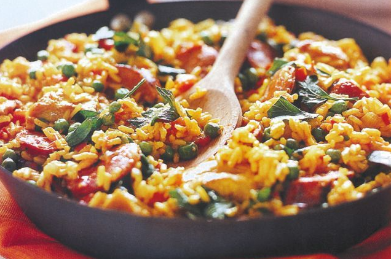

Paella

Ingredients:
- 250g chorizo sausage
- 1 tbsp olive oil
- 500g Lilydale Free Range Chicken Thigh, trimmed, cut into 5cm pieces
- 1 large brown onion, finely chopped
- 2 garlic cloves, crushed
- 1 red capsicum, finely diced
- 1 tsp ground turmeric
- 1 1/2 tsp ground cumin
- 1 1/2 cups white rice
- 400g can Coles Italian Diced Tomatoes
- 2 cups Massel chicken style liquid stock
- 1 cup frozen peas
- 1/2 cup fresh flat-leaf parsley leaves, roughly chopped
Cooking Steps:
- Heat a large heavy-based frying pan over medium-high heat. Add sausage. Cook for 4 minutes, turning, or until browned. Remove to a plate. Cut into 1cm-thick slices.
- Reduce heat to medium. Add oil and chicken to frying pan. Cook for 2 to 3 minutes each side or until golden. Add onion, garlic and capsicum. Cook, stirring, for 2 to 3 minutes or until soft.
- Add turmeric, cumin, rice, tomatoes and stock to frying pan. Stir until well combined. Bring to the boil. Reduce heat to low. Cover. Simmer for 15 minutes, stirring occasionally, or until rice is tender.
- Remove lid. Stir through peas and sausage. Cook for a further 1 to 2 minutes or until heated through. Sprinkle with parsley. Serve.